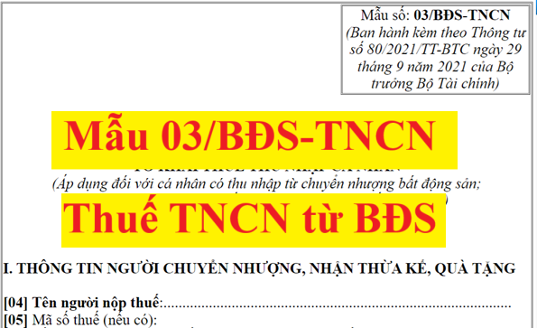

Mẫu số 03/BĐS-TNCN theo thông tư 80/2021/TT-BTC là Tờ khai thuế thu nhập cá nhân áp dụng đối với cá nhân có thu nhập từ chuyển nhượng bất động sản; thu nhập từ nhận thừa kế, quà tặng là bất động sản
CỘNG HOÀ XÃ HỘI CHỦ NGHĨA VIỆT NAM Độc lập - Tự do - Hạnh phúc
TỜ KHAI THUẾ THU NHẬP CÁ NHÂN
(Áp dụng đối với cá nhân có thu nhập từ chuyển nhượng bất động sản; thu nhập từ nhận thừa kế và nhận quà tặng là bất động sản) [01] Kỳ tính thuế: Lần phát sinh: Ngày … tháng … năm ... [02] Lần đầu: * [03] Bổ sung lần thứ:…
I. THÔNG TIN NGƯỜI CHUYỂN NHƯỢNG, NHẬN THỪA KẾ, QUÀ TẶNG
[04] Tên người nộp thuế:............................................................................................ [05] Mã số thuế (nếu có): [06] Số CMND/CCCD/Hộ chiếu (trường hợp cá nhân quốc tịch Việt Nam): ………. [06.1] Ngày cấp:…………………… [06.2] Nơi cấp:………………………….... [07] Hộ chiếu (trường hợp cá nhân không có quốc tịch Việt Nam): ………………….. [07.1] Ngày cấp:…………………… [07.2] Nơi cấp:………………………….... [08] Địa chỉ chỗ ở hiện tại: ………………................................................................... [09] Quận/huyện: ................... [10] Tỉnh/Thành phố: .................................................. [11] Điện thoại: ............................................... [12] Email: ......................................... [13] Tên tổ chức, cá nhân khai thay (nếu có):.............................................................. [14] Mã số thuế (nếu có): [15] Địa chỉ: ……………………..…………………………………………………... [16] Quận/huyện: ................... [17] Tỉnh/Thành phố: .................................................. [20] Tên đại lý thuế (nếu có):.................................................................................. [21] Mã số thuế (nếu có): [22] Địa chỉ: ……………………..………………..…………………………………. [23] Quận/huyện: ................... [24] Tỉnh/Thành phố: .................................................. [25] Điện thoại: ............................................... [26] Email: ....................................... [27] Hợp đồng đại lý thuế: [28] Số: .......................... [29] Ngày:................................ [30] Giấy tờ về quyền sử dụng đất, quyền sở hữu nhà ở và tài sản gắn liền với đất: ………………………………………………………………………….…………….. [30.1] Số:………… [30.2] Do cơ quan:………………… [30.3] Cấp ngày:……….. [31] Hợp đồng mua bán nhà ở, công trình xây dựng hình thành trong tương lai ký với chủ dự án cấp 1, cấp 2 hoặc Sàn giao dịch của chủ dự án:………..…………………… [31.1] Số……………………..[31.2] Ngày:………………………………… [32]Hợp đồng chuyển nhượng trao đổi bất động sản: [32.1] Số:………..… [32.2] Nơi lập…………. [32.3] Ngày lập:………... [32.4] Cơ quan chứng thực ………… [32.5] Ngày chứng thực: ........................ II. THÔNG TIN NGƯỜI NHẬN CHUYỂN NHƯỢNG, NHẬN THỪA KẾ, QUÀ TẶNG [33] Họ và tên đại diện:................................................................................................ [34] Mã số thuế (nếu có): [35] Số CMND/CCCD/Hộ chiếu (trường hợp chưa có mã số thuế):………………… [35.1] Ngày cấp:…………………… [35.2] Nơi cấp:………………………….... [36] Văn bản Phân chia di sản thừa kế, quà tặng là Bất động sản [36.1] Nơi lập hồ sơ nhận thừa kế, quà tặng:............................. ....................................................... [36.2] Ngày lập:............................. ....................................................... [36.3] Cơ quan chứng thực:................................................................................... [36.4] Ngày chứng thực: ........................................................................................ III. LOẠI BẤT ĐỘNG SẢN CHUYỂN NHƯỢNG, NHẬN THỪA KẾ, QUÀ TẶNG [37] Quyền sử dụng đất và tài sản gắn liền trên đất [38] Quyền sở hữu hoặc sử dụng nhà ở [39] Quyền thuê đất, thuê mặt nước [40] Bất động sản khác IV. ĐẶC ĐIỂM BẤT ĐỘNG SẢN CHUYỂN NHƯỢNG, NHẬN THỪA KẾ, QUÀ TẶNG [41] Thông tin về đất: [41.1] Thửa đất số (Số hiệu thửa đất)……; Tờ bản đồ số (số hiệu):………......... [41.2] Địa chỉ:........................................................................................................ [41.3] Số nhà…. Toà nhà… Ngõ/hẻm…... đường/phố…... Thôn/xóm/ấp:......... [41.4] Phường/xã:................................................................................................. [41.5] Quận/huyện:.............................................................................................. [41.6] Tỉnh/thành phố:......................................................................................... [41.7] Loại đất, vị trí thửa đất (1,2,3,4…) + Loại đất 1:............... Vị trí 1:………… Diện tích:…………….m2 + Loại đất 1:............... Vị trí 2:………… Diện tích:…………….m2 … + Loại đất 2:............... Vị trí 1:………… Diện tích:…………….m2 + Loại đất 2:............... Vị trí 2:………… Diện tích:…………….m2 … [41.8] Hệ số (nếu có):…………………………………………………………. [41.9] Nguồn gốc đất: (Đất được nhà nước giao, cho thuê; Đất nhận chuyển nhượng; nhận thừa kế, hoặc nhận tặng, cho…): ……………………………………..……. [41.10] Giá trị đất thực tế chuyển giao (nếu có): ……………………….đồng [42] Thông tin về nhà ở, công trình xây dựng [42.1] Nhà ở riêng lẻ: [42.2] Loại 1:......... Cấp nhà ở…..Diện tích sàn xây dựng:…………m2 [42.3] Loại 2:......... Cấp nhà ở…..Diện tích sàn xây dựng:…………m2 [42.4] Giá trị nhà thực tế chuyển giao (nếu có):…………………………đồng [42.5] Nhà ở chung cư: [42.6] Chủ dự án:.......................... [42.7] Địa chỉ dự án, công trình:…………. [42.8] Diện tích xây dựng:............ [42.9] Diện tích sàn xây dựng:…..….m2 [42.10] Diện tích sở hữu chung:.….m2 [42.11] Diện tích sở hữu riêng:..….m2 [42.12] Kết cấu:............ [42.13] Số tầng nổi:............ [42.14] Số tầng hầm:…….. [42.15] Năm hoàn công:……………… [42.16] Giá trị nhà thực tế chuyển giao (nếu có):………………………đồng 42.17] Nguồn gốc nhà Tự xây dựng [42.18] Năm hoàn thành (hoặc năm bắt đầu sử dụng nhà):.…. Chuyển nhượng [42.19] Thời điểm làm giấy tờ chuyển giao nhà:..................... [42.20] Công trình xây dựng (trừ nhà ở) [42.21] Chủ dự án:........................[42.22] Địa chỉ dự án, công trình……………. [42.23] Loại công trình:............... Hạng mục công trình……Cấp công trình…… [42.24] Diện tích xây dựng: ........ [42.25] Diện tích sàn xây dựng:…..….m2; [42.26] Hệ số (nếu có):...................... [42.27] Đơn giá:................................ [42.28] Giá trị công trình thực tế chuyển giao (nếu có):………………đồng [43] Tài sản gắn liền với đất [43.1] Loại tài sản gắn liền với đất:....................................................................... [43.2] Giá trị tài sản gắn liền với đất thực tế chuyển giao (nếu có):...…đồng V. THU NHẬP TỪ CHUYỂN NHƯỢNG BẤT ĐỘNG SẢN; TỪ NHẬN THỪA KẾ, QUÀ TẶNG LÀ BẤT ĐỘNG SẢN [44] Loại thu nhập [44.1] Thu nhập từ chuyển nhượng bất động sản [44.2] Thu nhập từ nhận thừa kế, quà tặng [45] Giá trị chuyển nhượng bất động sản và tài sản khác gắn liền với đất hoặc giá trị bất động sản nhận thừa kế, quà tặng:…………………………………….................... đồng [46] Thuế thu nhập cá nhân phát sinh đối với chuyển nhượng bất động sản ([46]=[45]x2%):.............................................................................................................đồng [47] Thu nhập miễn thuế:..................................................................................... đồng [48] Thuế thu nhập cá nhân được miễn ([48] = [47] x 2%) ………………........ đồng [49] Thuế thu nhập cá nhân phải nộp đối với chuyển nhượng bất động sản:{[49]=([46]-[48])}: …………………………đồng [50] Thuế thu nhập cá nhân phải nộp đối với nhận thừa kế, quà tặng là bất động sản: {[50]=([45]-[47]-10.000.000) x 10%}:………………..…….......đồng [51] Số thuế phải nộp, được miễn của chủ sở hữu (chỉ khai trong trường hợp có đồng sở hữu hoặc chủ sở hữu, đồng sở hữu được miễn thuế theo quy định):
Đơn vị tiền: Đồng Việt Nam
- ...................................................................................................................................; - ...................................................................................................................................; Tôi cam đoan những nội dung kê khai là đúng và chịu trách nhiệm trước pháp luật về những nội dung đã khai./.
Ghi chú:
(2)Trường hợp có Đồng sở hữu (kể cả được miễn thuế hoặc không được miễn) đại diện NNT khai đầy đủ các thông tin trên Chỉ tiêu [51]; (3)Trường hợp NNT không có Đồng sở hữu nhưng có số thuế TNCN được miễn 1 phần, khai các chỉ tiêu tương ứng: - Đối với số thuế được miễn: NNT khai các chỉ tiêu [51.2], [51.3], [51.4], [51.6] và [51.7] hoặc [51.8] - Đối với số thuế phải nộp: NNT khai các chỉ tiêu [51.2], [51.3], [51.4] và chỉ tiêu [51.5]. (4) Khai chỉ tiêu [51.4]: - Trường hợp có Đồng sở hữu: đại diện NNT khai tỷ lệ sở hữu của Chủ sở hữu và các Đồng sở hữu; - Trường hợp NNT không có Đồng sở hữu mà có phát sinh số thuế được miễn một phần thì NNT tự xác định tỷ lệ sở hữu để làm căn cứ tính số thuế phải nộp, số thuế được miễn thuế TNCN đối với chuyển nhượng, thừa kế, quà tặng là bất động sản. 2. Hướng dẫn khai Mục: “ NGƯỜI NỘP THUẾ hoặc ĐẠI DIỆN HỢP PHÁP CỦA NGƯỜI NỘP THUẾ”: chỉ khai thay trong trường hợp không phát sinh số thuế được miễn và trước khi ký phải ghi rõ “Khai thay”. Khai thay trong trường hợp tại nội dung Hợp đồng chuyển nhượng bất động sản có nêu người mua phải có trách nhiệm khai thuế TNCN hoặc trường hợp người nộp thuế có ủy quyền cho cá nhân khác theo quy định của Pháp luật. |
Cách kê khai Mẫu số 03/BĐS-TNCN theo thông tư 80/2021/TT-BTC như sau:
* Phần thông tin chung:

[01]: Kỳ tính thuế: Ghi rõ ngày, tháng, năm thực hiện khai thuế.
[02] Lần đầu: Nếu khai thuế lần đầu thì đánh dấu “x” vào ô vuông.
[03] Bổ sung lần thứ: Nếu khai sau lần đầu thì được xác định là khai bổ sung và ghi số lần khai bổ sung vào chỗ trống. Số lần khai bổ sung được ghi theo chữ số trong dãy chữ số tự nhiên (1, 2, 3….).
* Phần kê khai các chỉ tiêu của bảng:
I. THÔNG TIN NGƯỜI CHUYỂN NHƯỢNG, NHẬN THỪA KẾ, QUÀ TẶNG
[04] Tên người nộp thuế: Ghi rõ ràng, đầy đủ họ, tên theo đăng ký thuế hoặc chứng minh nhân dân/CCCD/Hộ chiếu của cá nhân là bên chuyển nhượng hoặc bên nhận thừa kế, quà tặng là bất động sản.
Trường hợp bất động sản chuyển nhượng là đồng sở hữu của nhiều cá nhân, các cá nhân đồng sở hữu ủy quyền cho một cá nhân khai thuế thì ghi tên cá nhân đại diện khai thuế. Trường hợp bất động sản nhận thừa kế, quà tặng là đồng sở hữu của nhiều cá nhân thì mỗi cá nhân nhận thừa kế, quà tặng kê khai trên một tờ khai.
[05] Mã số thuế: Ghi rõ ràng, đầy đủ mã số thuế của cá nhân theo Giấy chứng nhận đăng ký thuế dành cho cá nhân hoặc Thông báo mã số thuế cá nhân do cơ quan thuế cấp (nếu không có thì bỏ trống và bắt buộc khai chỉ tiêu [06] hoặc [07]).
[06] Số CMND/CCCD/Hộ chiếu (trường hợp cá nhân quốc tịch Việt Nam): [06.1] Ngày cấp:…………………… [06.2] Nơi cấp:…..
Ghi rõ ràng, đầy đủ số, ngày cấp, nơi cấp CMND/CCCD/Hộ chiếu của cá nhân quốc tịch Việt Nam không có mã số thuế.
[07] Hộ chiếu (trường hợp cá nhân không có quốc tịch Việt Nam):
[07.1] Ngày cấp:…………………… [07.2] Nơi cấp:…………
Ghi rõ ràng, đầy đủ số, ngày cấp, nơi cấp Hộ chiếu của cá nhân không có quốc tịch Việt Nam không có mã số thuế.
[08] Địa chỉ chỗ ở hiện tại: Ghi rõ ràng, đầy đủ địa chỉ số nhà, xã phường nơi ở hiện tại của cá nhân.
[09] Quận/huyện: Ghi quận, huyện thuộc tỉnh/thành phố nơi ở hiện tại của cá nhân.
[10] Tỉnh/thành phố: Ghi tỉnh/thành phố nơi ở hiện tại của cá nhân.
[11] Điện thoại: Ghi rõ ràng, đầy đủ điện thoại của cá nhân.
[12] Email: Ghi rõ ràng, đầy đủ địa chỉ email của cá nhân.
[13] Tên tổ chức, cá nhân khai thay (nếu có): Ghi rõ ràng, đầy đủ tên tổ chức khai thay (theo Quyết định thành lập hoặc Giấy chứng nhận đăng ký kinh doanh hoặc Giấy chứng nhận đăng ký thuế) trong trường hợp tổ chức khai thuế thay, nộp thuế thay cho cá nhân. Hoặc ghi đầy đủ họ tên của cá nhân khai thuế thay, nộp thuế thay theo đăng ký thuế hoặc chứng minh nhân dân/CCCD/Hộ chiếu trong trường hợp cá nhân khai thuế thay, nộp thuế thay cho cá nhân.
[14] Mã số thuế (nếu có): Ghi rõ ràng, đầy đủ mã số thuế của tổ chức/cá nhân khai thuế thay, nộp thuế thay (nếu có khai chỉ tiêu [13]).
[15] Địa chỉ: Ghi rõ ràng, đầy đủ địa chỉ của tổ chức/cá nhân khai thuế thay, nộp thuế thay (nếu có khai chỉ tiêu [13]).
[16] Quận/huyện: Ghi rõ ràng, đầy đủ tên quận/huyện của tổ chức/cá nhân khai thuế thay, nộp thuế thay (nếu có khai chỉ tiêu [13]).
[17] Tỉnh/thành phố: Ghi rõ ràng, đầy đủ tên tỉnh/thành phố của tổ chức/cá nhân khai thuế thay, nộp thuế thay (nếu có khai chỉ tiêu [13]).
[18] Điện thoại: Ghi rõ ràng, đầy đủ điện thoại của tổ chức/cá nhân khai thuế thay, nộp thuế thay (nếu có khai chỉ tiêu [13]).
[19] Email: Ghi rõ ràng, đầy đủ địa chỉ email của tổ chức/cá nhân khai thuế thay, nộp thuế thay (nếu có khai chỉ tiêu [13]).
[20]: Tên đại lý thuế (nếu có): Trường hợp cá nhân uỷ quyền khai thuế cho Đại lý thuế thì phải ghi rõ ràng, đầy đủ tên của Đại lý thuế theo Quyết định thành lập hoặc Giấy chứng nhận đăng ký kinh doanh của Đại lý thuế.
[21] Mã số thuế: Ghi rõ ràng, đầy đủ mã số thuế của Đại lý thuế (nếu có khai chỉ tiêu [20])
[22] Địa chỉ: Ghi đúng theo địa chỉ trụ sở nơi đăng ký kinh doanh của Đại lý thuế theo giấy phép kinh doanh như đã đăng ký với cơ quan thuế (nếu có khai chỉ tiêu [20])
[23] Quận/huyện: Ghi rõ ràng, đầy đủ tên quận/huyện của Đại lý thuế (nếu có khai chỉ tiêu [20]).
[24] Tỉnh/thành phố: Ghi rõ ràng, đầy đủ tên tỉnh/thành phố Đại lý thuế (nếu có khai chỉ tiêu [20]).
[25] Điện thoại: Ghi rõ ràng, đầy đủ số điện thoại của Đại lý thuế (nếu có khai chỉ tiêu [20]).
[26] Email: Ghi rõ ràng, đầy đủ địa chỉ email của Đại lý thuế (nếu có khai chỉ tiêu [20]).
[27], [28], [29] Hợp đồng đại lý thuế: Ghi rõ ràng, đầy đủ số, ngày của Hợp đồng đại lý thuế giữa cá nhân với Đại lý thuế (hợp đồng đang thực hiện) (nếu có khai chỉ tiêu [20]).
[30] Giấy tờ về quyền sử dụng đất, quyền sở hữu nhà ở và tài sản gắn liền với đất:
[30.1] Số:……… [30.2] Do cơ quan:………… [30.3] Cấp ngày:………..
Ghi thông tin về tên loại Giấy chứng nhận, số, cơ quan cấp, ngày cấp của Giấy tờ về quyền sử dụng đất, quyền sở hữu nhà ở và tài sản gắn liền với đất (GCN QSDĐ) trường hợp bất động sản đã được cấp GCN QSDĐ (trường hợp chuyển nhượng hợp đồng mua bán nhà ở, nhà ở thương mại, công trình xây dựng hình thành trong tương lai, công trình xây dựng, nhà ở đã được dự án bàn giao đưa vào sử dụng nhưng chưa cấp Giấy chứng nhận quyền sử dụng đất, quyền sở hữu nhà ở và tài sản gắn liền trên đất theo quy định của pháp luật về nhà ở thì khai chỉ tiêu [31])
[31]Hợp đồng mua bán nhà ở, công trình xây dựng hình thành trong tương lai ký với chủ dự án cấp 1, cấp 2 hoặc Sàn giao dịch của chủ dự án:
[31.1] Số…………………..[31.2] Ngày:…………………………………
Ghi thông tin về tên chủ dự án, số Hợp đồng, ngày Hợp đồng của Hợp đồng mua bán nhà ở, công trình xây dựng hình thành trong tương lai ký với chủ dự án cấp 1, cấp 2 hoặc Sàn giao dịch của chủ dự án
[32] Hợp đồng chuyển nhượng trao đổi bất động sản:
[32.1] Số:………..… [32.2] Nơi lập…………. [32.3] Ngày lập:……...
[32.4] Cơ quan chứng thực ………… [32.5] Ngày chứng thực: .............
Ghi các nội dung về Số, nơi lập, ngày lập, cơ quan chứng thực, ngày chứng thực của Hợp đồng chuyển nhượng bất động sản trong trường hợp mua bán, đổi bất động sản.
II. THÔNG TIN NGƯỜI NHẬN CHUYỂN NHƯỢNG, CHO THỪA KẾ, QUÀ TẶNG
[33] Tên người nộp thuế: Ghi rõ ràng, đầy đủ họ, tên theo đăng ký thuế hoặc chứng minh nhân dân/CCCD/Hộ chiếu của cá nhân là bên nhận chuyển nhượng hoặc bên cho thừa kế, quà tặng là bất động sản.
Trường hợp bất động sản nhận chuyển nhượng, cho thừa kế, quà tặng là đồng sở hữu của nhiều cá nhân, các cá nhân đồng sở hữu ủy quyền cho một cá nhân khai thuế thì ghi tên cá nhân đại diện khai thuế.
[34] Mã số thuế: Ghi rõ ràng, đầy đủ mã số thuế của cá nhân theo Giấy chứng nhận đăng ký thuế dành cho cá nhân hoặc Thông báo mã số thuế cá nhân do cơ quan thuế cấp (nếu không có thì bỏ trống và bắt buộc khai chỉ tiêu [35]).
[35] Số CMND/CCCD/Hộ chiếu (trường hợp chưa có mã số thuế):
[35.1] Ngày cấp:……………… [35.2] Nơi cấp:………………………....
Trường hợp cá nhân chưa có mã số thuế thì ghi rõ ràng, đầy đủ số, ngày cấp, nơi cấp CMND/CCCD/Hộ chiếu.
[36] Văn bản Phân chia di sản thừa kế, quà tặng là Bất động sản:
[36.1] Nơi lập hồ sơ nhận thừa kế, quà tặng:...........[36.2] Ngày lập:…...
[36.3] Cơ quan chứng thực:................[36.4] Ngày chứng thực: .............
Ghi nội dung về nơi lập hồ sơ nhận thừa kế, quà tặng, ngày lập, cơ quan chứng thực, ngày chứng thực văn bản Phân chia di sản thừa kế, quà tặng là bất động sản trường hợp cá nhân có thu nhập từ nhận thừa kế, quà tặng và bất động sản.
III. LOẠI BẤT ĐỘNG SẢN CHUYỂN NHƯỢNG, NHẬN THỪA KẾ, QUÀ TẶNG
[37] Nếu bất động sản chuyển nhượng, nhận thừa kế, quà tặng là quyền sử dụng đất và tài sản gắn liền trên đất thì tích vào chỉ tiêu này.
[38] Nếu bất động sản chuyển nhượng, nhận thừa kế, quà tặng là quyền sở hữu hoặc sử dụng nhà ở thì tích vào chỉ tiêu này.
[39] Nếu bất động sản chuyển nhượng, nhận thừa kế, quà tặng là quyền thuê đất, thuê mặt nước thì tích vào chỉ tiêu này.
[40] Nếu bất động sản chuyển nhượng, nhận thừa kế, quà tặng là bất động sản khác không thuộc các trường hợp trên thì tích vào chỉ tiêu này.
IV. ĐẶC ĐIỂM BẤT ĐỘNG SẢN CHUYỂN NHƯỢNG, NHẬN THỪA KẾ, QUÀ TẶNG
[41]: Thông tin về đất: Kê khai thông tin về đất theo thông tin trên GCN QSDĐ, giấy tờ chứng minh quyền sở hữu nhà hoặc quyền sở hữu các công trình trên đất hoặc hợp đồng mua bán nhà ở, công trình xây dựng hình thành trong tương lai,...
[41.1]: Ghi số thửa, số tờ bản đồ (nếu không có thì bỏ trống)
[41.2], [41.3], [41.4], [41.5], [41.6]: Ghi địa chỉ thửa đất
[41.7]: Loại đất, vị trí thửa đất (1,2,3,4…) (nếu không có thì bỏ trống)
- Ghi thông tin theo giấy tờ quyền sử dụng đất, tùy thuộc vào từng vị trí của thửa đất có thể là vị trí 1, vị trí 2.
- Nếu không có vị trí được ghi trên giấy tờ về quyền sử dụng đất thì ghi theo vị trí thực tế của thửa đất.
- Loại đất, diện tích: Trên giấy tờ chứng minh quyền sử dụng đất sẽ có ghi tên các loại đất và diện tích sử dụng;
Ví dụ: Loại đất 1: Đất ở, diện tích 100m2; Loại đất 2: Đất nông nghiệp, diện tích: 200m2...
[41.8]: Hệ số (nếu có): Khai thông tin hệ số đất (nếu không có thì bỏ trống)
[41.9]: Nguồn gốc đất: Ghi theo nguồn gốc của đất được ghi nhận trong giấy chứng nhận quyền sử dụng đất hoặc trong giấy tờ khác có giá trị tương đương (nếu không có thì bỏ trống).
[41.10]: Giá trị đất thực tế chuyển giao (nếu có): Ghi theo giá trên hợp đồng chuyển nhượng bất động sản (nếu hợp đồng chuyển nhượng bất động sản ghi tổng số tiền thì bỏ trống chỉ tiêu này).
[42]: Thông tin về nhà ở, công trình xây dựng: Ghi thông tin về nhà ở, công trình xây dựng theo thông tin trên GCN QSDĐ, giấy tờ chứng minh quyền sở hữu nhà hoặc quyền sở hữu các công trình trên đất hoặc hợp đồng mua bán nhà ở, công trình xây dựng hình thành trong tương lai,...
[42.1], [42.2], [42.3]: Ghi thông tin về loại nhà, cấp nhà ở, diện tích sàn xây dựng.
[42.4] Giá trị nhà thực tế chuyển giao (nếu có): Ghi theo giá trên hợp đồng chuyển nhượng (nếu hợp đồng chuyển nhượng ghi tổng số tiền thì bỏ trống chỉ tiêu này)
[42.5] đến [42.15]: Ghi thông tin về chủ dự án, địa chỉ dự án, công trình, diện tích xây dựng, diện tích sàn xây dựng, diện tích sở hữu chung, diện tích sở hữu riêng, kết cấu, số tầng nổi, số tầng hầm, năm hoàn công của nhà ở chung cư (nếu chỉ tiêu nào không có thông tin thì bỏ trống)
[42.16]: Giá trị nhà thực tế chuyển giao (nếu có): Ghi theo giá trên hợp đồng chuyển nhượng bất động sản (nếu hợp đồng chuyển nhượng bất động sản ghi tổng số tiền thì bỏ trống chỉ tiêu này)
[42.17], [42.18], [42.19]: Trường hợp nguồn gốc nhà là nhà tự xây dựng tích vào ô Tự xây dựng và khai năm hoàn thành (hoặc năm bắt đầu sử dụng nhà) vào chỉ tiêu [42.18]. Trường hợp nguồn gốc nhà là do nhận chuyển nhượng thì tích vào chỉ tiêu này và ghi thời điểm làm giấy tờ chuyển giao nhà chỉ tiêu [42.19]
[42.20] đến [42.27]: Ghi thông tin về về chủ dự án, địa chỉ dự án, công trình, loại công trình, hạng mục công trình, cấp công trình, diện tích xây dựng, diện tích sàn xây dựng, hệ số, đơn giá của Công trình xây dựng (trừ nhà ở) (nếu chỉ tiêu nào không có thông tin thì bỏ trống).
[42.28]: Giá trị công trình thực tế chuyển giao (nếu có): Ghi theo giá trên hợp đồng chuyển nhượng bất động sản (nếu hợp đồng chuyển nhượng bất động sản ghi tổng số tiền thì bỏ trống chỉ tiêu này)
[43] Tài sản gắn liền với đất: Ghi thông tin về tài sản gắn liền với đất (trừ nhà ở, công trình xây dựng) theo thông tin trên GCN QSDĐ, giấy tờ chứng minh quyền sở hữu nhà hoặc quyền sở hữu các công trình trên đất hoặc hợp đồng mua bán nhà ở, công trình xây dựng hình thành trong tương lai,....
[43.1]: Loại tài sản gắn liền với đất: Ghi rõ loại tài sản gắn liền với đất.
[43.2]: Giá trị tài sản gắn liền với đất thực tế chuyển giao (nếu có): Ghi theo giá trên hợp đồng chuyển nhượng bất động sản (nếu hợp đồng chuyển nhượng bất động sản ghi tổng số tiền thì bỏ trống chỉ tiêu này)
V. THU NHẬP TỪ CHUYỂN NHƯỢNG BẤT ĐỘNG SẢN; TỪ NHẬN THỪA KẾ, QUÀ TẶNG LÀ BẤT ĐỘNG SẢN
[44] Loại thu nhập: Nếu thu nhập từ chuyển nhượng bất động sản thì tích vào chỉ tiêu [44.1]. Nếu thu nhập từ nhận thừa kế, quà tặng thì tích vào chỉ tiêu [44.2].
[45] Giá trị chuyển nhượng bất động sản và tài sản khác gắn liền với đất hoặc giá trị bất động sản nhận thừa kế, quà tặng: là giá chuyển nhượng bất động sản ghi trên Hợp đồng chuyển nhượng, (nếu giá chuyển nhượng bất động sản thấp hơn giá của Ủy ban nhân dân tỉnh quy định thì ghi giá của Ủy ban ) trong trưởng hợp chuyển nhượng, đổi; là giá do Ủy ban nhân dân tỉnh quy định trong trường hợp nhận thừa kế, quà tặng. Trường hợp trên hợp đồng chuyển nhượng không tách riêng giá đất và nhà ở, tài sản trên đất thì khai tổng giá trị hợp đồng chuyển nhượng vào chỉ tiêu này.
[46] Thuế thu nhập cá nhân phát sinh đối với chuyển nhượng bất động sản: Chỉ tiêu [45]x2%
[47] Thu nhập miễn thuế: Là phần thu nhập được miễn thuế theo quy định của pháp luật.
[48] Thuế thu nhập cá nhân được miễn: Chỉ tiêu [47] x 2%
[49] Thuế thu nhập cá nhân phải nộp đối với chuyển nhượng bất động sản: Chỉ tiêu [46]- Chỉ tiêu [48]
[50] Thuế thu nhập cá nhân phải nộp đối với nhận thừa kế, quà tặng là bất động sản: (Chỉ tiêu [45]- Chỉ tiêu [47]-10.000.000) x 10%
[51] Số thuế phải nộp, được miễn của chủ sở hữu: Trường hợp có đồng sở hữu hoặc chủ sở hữu, đồng sở hữu được miễn thuế thì xác định tỷ lệ sở hữu, số thuế phải nộp, số thuế được miễn, lý do miễn của từng chủ sở hữu, đồng sở hữu và ghi vào mục này.
- Trường hợp người nộp thuế (NNT) không có Đồng sở hữu nếu được miễn toàn bộ số thuế theo quy định về thuế thu nhập cá nhân (TNCN) đối với bất động sản chuyển nhượng, thừa kế, cho tặng thì chỉ tích chọn vào dòng đầu tiên của cột [51.7] hoặc nêu lý do miễn tại cột [51.8] mà không phải kê khai các thông tin khác;
- Trường hợp có Đồng sở hữu (kể cả được miễn thuế hoặc không được miễn) đại diện NNT khai đầy đủ các thông tin trên Chỉ tiêu [51];
- Trường hợp NNT không có Đồng sở hữu nhưng có số thuế TNCN được miễn 1 phần, khai các chỉ tiêu tương ứng:
+ Đối với số thuế được miễn: NNT khai các chỉ tiêu [51.2], [51.3], [51.4], [51.6] và [51.7] hoặc [51.8]
+ Đối với số thuế phải nộp: NNT khai các chỉ tiêu [51.2], [51.3], [51.4] và chỉ tiêu [51.5].
- Khai chỉ tiêu [51.4]:
+ Trường hợp có Đồng sở hữu: đại diện NNT khai tỷ lệ sở hữu của Chủ sở hữu và các Đồng sở hữu;
+ Trường hợp NNT không có Đồng sở hữu mà có phát sinh số thuế được miễn một phần thì NNT tự xác định tỷ lệ sở hữu để làm căn cứ tính số thuế phải nộp, số thuế được miễn thuế TNCN đối với chuyển nhượng, thừa kế, quà tặng là bất động sản.
Hướng dẫn khai Mục: “ NGƯỜI NỘP THUẾ hoặc ĐẠI DIỆN HỢP PHÁP CỦA NGƯỜI NỘP THUẾ”: chỉ khai thay trong trường hợp không phát sinh số thuế được miễn và trước khi ký phải ghi rõ “Khai thay”. Khai thay trong trường hợp tại nội dung Hợp đồng chuyển nhượng bất động sản có nêu người mua phải có trách nhiệm khai thuế TNCN hoặc trường hợp người nộp thuế có ủy quyền cho cá nhân khác theo quy định của Pháp luật.
Công ty đào tạo Kế Toán Diệu Tâm mời các bạn tham khảo thêm bài viết: